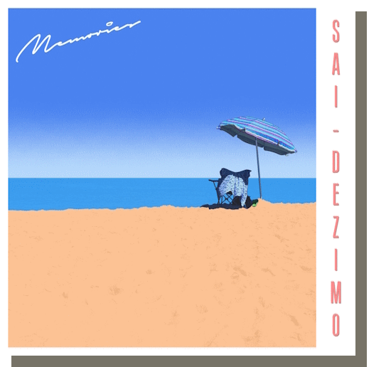
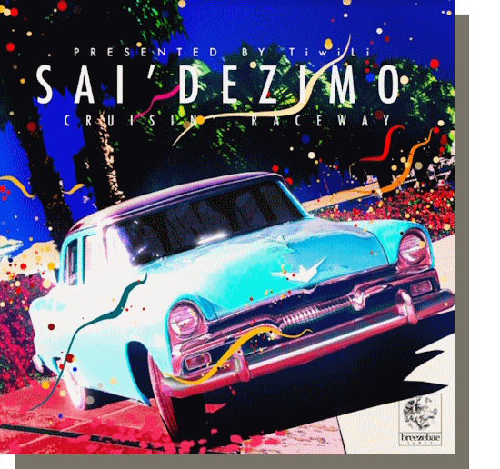
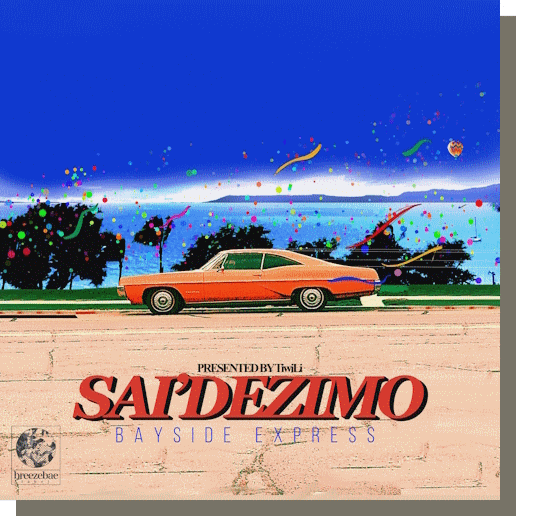

|

|
Memories
My latest album, released on the 4th of December, 2022. Memories leans a bit more into contemporary jazz compared to Bayside Express.
1. Through The Sky 2. Rainy Days 3. See You There! 4. Sunset Over Cape Kadokura 5. Beach Time 6. Memories 7. Cruisin' Raceway 8. Soaring 9. After The Rain
|

|
Cruisin' Raceway
My first single, released on the 25th of August, 2021. This was my artist at the time's favourite song, so I thought it would be a good idea to release it as a single before Memories released.
1. Cruisin' Raceway
|

|
Bayside Express
My debut album, released on the 11th of June, 2021. Bayside Express was largely inspired by Japanese City pop as at the time, City Pop made up the majority of the music I listened to.
1. Summer Dilemma 2. Under The Crystalline Sea 3. Fighter 4. Asphalt Screamer 5. Light Breeze 6. Over The Horizon 7. Winter Sun (2021 Version) 8. Bayside Express 9. Landing Home 10. Summer's End
|
 Copyright © 2024 Zaide Simmons
Copyright © 2024 Zaide Simmons
|